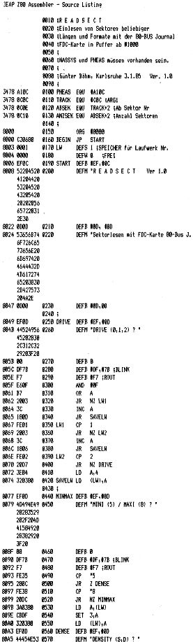

80-Bus Journal |
Okt./Nov./Dezember 1984 · Ausgabe 4 |
Dies ist ein recht komfortables Programm, das es gestattet, eine Anzahl von Sektoren in beliebigem Format in den Speicher einzulesen.
Nach dem Start (durch EMDOS Aufruf) kann man zunächst das Laufwerk anwählen (habe ich von LWTEST übernommen).
Dann wird die Eingabe der Spur und des Sektors verlangt, ab dem gelesen werden soll. In der gleichen Zeile gibt man auch noch die Anzahl der zu lesenden Sektoren an. Die Eingaben leider wieder in Hex.
Die Punkte in der Eingabezeile muß man nicht beachten. Wichtig ist nur die Eingabe von drei Argumenten und der Abschluß durch ENTER.
Danach stellt das Programm fest, aus wieviel Bytes der einzelne Sektor aufgebaut ist, meldet das auf dem Bildschirm, zählt die Sektoren pro Spur und gibt auch diese aus. So hat man sofort einen Überblick über das eingelegte Diskettenformat.
Beim Einlesen (das immer mit #1000 im Speicher beginnt) wird die Startadresse des gerade eingelesenen Sektors jeweils auf dem Bildschirm angezeigt.
Das Anwendungsprotokoll kann diese Anzeige nicht richtig wiedergeben, da der Drucker beim Löschen des alten Wertes nicht mitspielt.
Nach dem letzten Sektor wird dieser angegeben, und das Programm springt zu EMDOS zurück.
Lesefehler werden gemeldet und das Programm dabei abgebrochen. So kann man auf dem Bildschirm feststellen, wo der Lesefehler aufgetreten ist. Dieser Fall sollte eigentlich nicht eintreten, da jeweils 10 Versuche gemacht werden.
Dieses Programm sollte helfen, auch ungewohnte Formate zu „entziffern“. Wenn allerdings Texte von Wordstar auf der ganzen Diskette verteilt sind, schafft auch dieses Programm keine Ordnung.
*EMDOS
B:READSECT.COM
READSECT Ver 1 0
Sektor lesen mit FDC-Karte 80-Bus J.
DRIVE (0,1,2) ? 1
MINI (5) / MAXI (8) ? 5
DENSITY (S,D) ? D
READSECTORS / DRIVE 1 / 5 Zoll / DOUBLE DENSE
TRK (0-FF) ab Sekt.(0-FF) Anzahl (0-FF)
1. 1. 49
Sektoren mit 0100 hex Bytes
10 hex Sektoren pro Spur
*1000 *1100 *1200 *1300 *1400 *1500 *1600 //
D00 *1E00 *1F00 *2000 *2100 *2200 *2300 *2400
0 *2B00 *2C00 *2D00 *2E00 *2F00 letzter Sektor
*EMDOS

| Seite 9 von 52 |
|---|